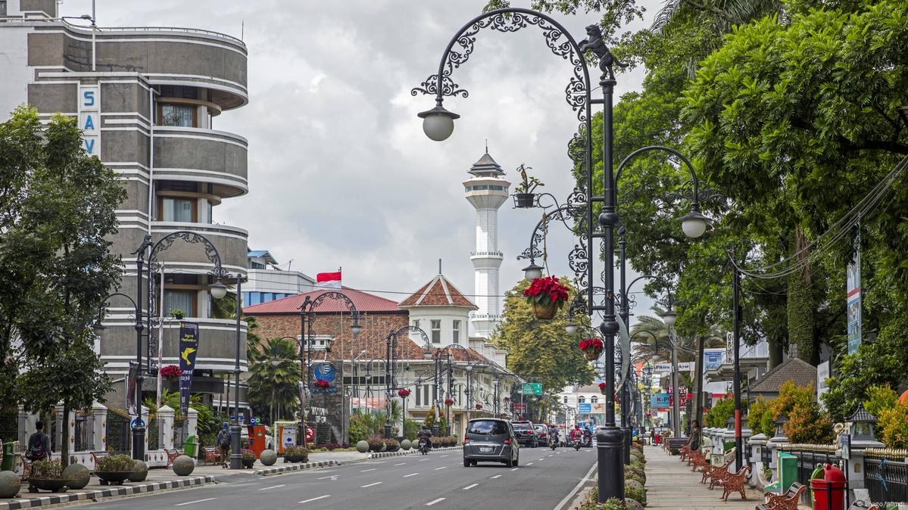
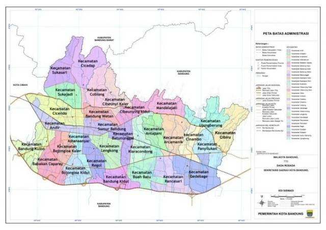
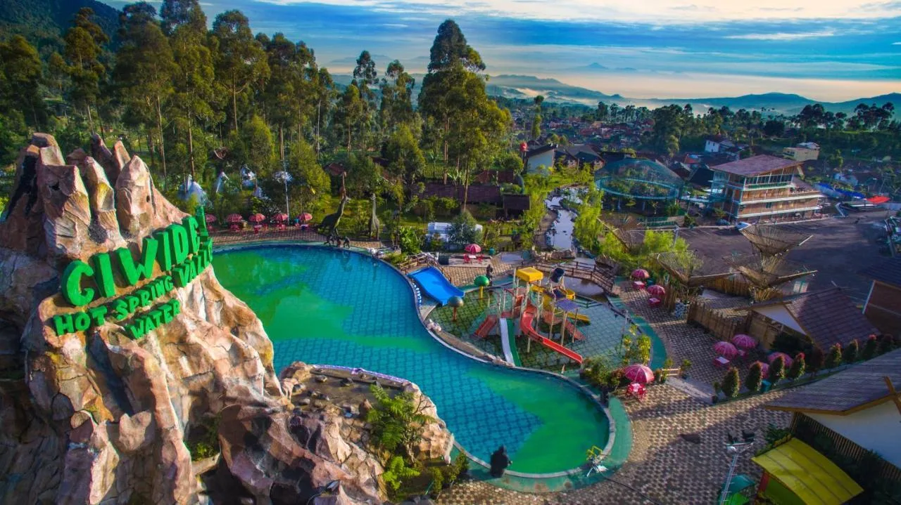
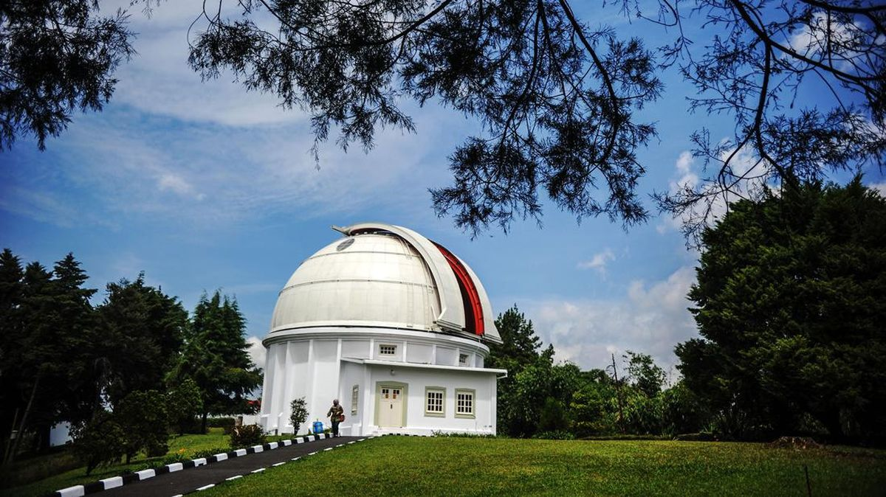
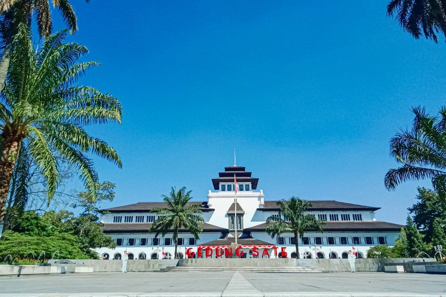

Sejarah

Kota Bandung memiliki sejarah panjang yang dimulai dari sebuah desa kecil hingga menjadi kota metropolitan seperti sekarang.
Asal-usul nama "Bandung" diperkirakan berasal dari kata "bendung" atau "banding", yang merujuk pada bendungan atau danau yang
terbentuk akibat aliran lava dari Gunung Tangkuban Perahu. Bandung juga dikenal sebagai "Kota Kembang" karena keindahan alamnya
dan dulunya dijuluki "Paris van Java" karena keindahannya yang mirip dengan kota Paris
Saat ini, Bandung adalah kota metropolitan yang terus berkembang pesat. Selain sebagai pusat pemerintahan Jawa Barat,
Bandung juga dikenal sebagai tujuan wisata yang menarik dengan berbagai daya tarik mulai dari kuliner, fashion, hingga wisata alam dan sejarah.
Geografis

Kota Bandung, ibu kota Provinsi Jawa Barat, secara geografis terletak di tengah-tengah provinsi tersebut, tepatnya di antara 107°36' Bujur Timur dan 6°55' Lintang Selatan.
Kota ini berada pada ketinggian sekitar 768 meter di atas permukaan laut, dengan titik tertinggi mencapai 1.050 meter di bagian utara dan terendah 675 meter
di bagian selatan. Bandung juga dikenal sebagai "Cekungan Bandung" karena dikelilingi oleh pegunungan, seperti Gunung Tangkuban Perahu, Gunung Manglayang,
dan Gunung Parahyangan.
Secara astronomis, Kota Bandung terletak pada koordinat 107°36' Bujur Timur dan 6°55' Lintang Selatan.
Rata-rata ketinggian Kota Bandung adalah 768 meter di atas permukaan laut (mdpl).
Wisata

Salah satu objek wisata terkenal di Ciwidey adalah Kawah Putih, sebuah danau vulkanik dengan air berwarna putih kehijauan yang memukau! Selain itu,
terdapat juga Situ Patenggang, danau yang indah dengan perahu-perahu tradisional untuk menikmati pemandangan danau.
Boscha

Observatorium Bosscha adalah lembaga riset yang berada di bawah naungan Fakultas Matematika dan Ilmu Pengetahuan Alam Institut Teknologi Bandung (FMIPA ITB).
Hingga saat ini, Observatorium Bosscha merupakan satu-satunya observatorium besar di Indonesia.
Gedung Sate

Gedung ini adalah sebuah bangunan bersejarah yang ada di pusat kota Bandung. Disebut sebagai Gedung Sate karena gedung ini mempunyai
ciri khas yang unik, yaitu ornamen 6 tusuk sate yang ada di atas menara sentral.